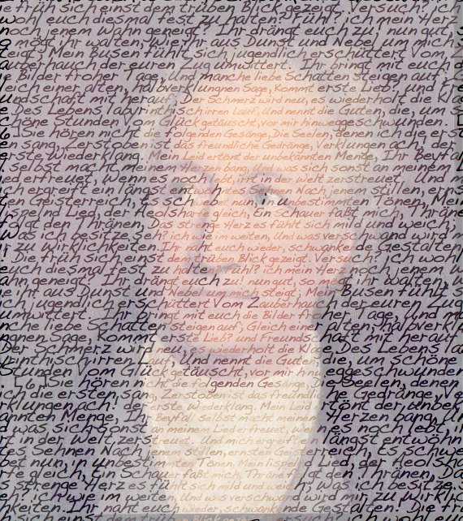

textorizer / excoffizer
textorizer / excoffizer
Textorizer allows you to make pictures formed with text. It is
best described by the sample images below. Although there are many
versions around, the only one that is continuing to supported is
this one. Excoffizer takes a picture and produces a vector
rendition of the picture, made of parallel lines of varying
thickness. It is inspired by Roger
Excoffon's pictograms for the 1968 Grenoble Winter
Olympics.
The previous version of Textorizer came as a downloadable
application. It is still available on a separate page but is no longer
maintained. The previous version of
excoffizer is also still available and is also
discontinued.
Choose a mode
examples
Here are a few pictures produced with textorizer (click to see the text)



There is even a Textorized Group on Flickr, with many more examples.
Documentation
There are 2 ways of textorizing a picture. One is with the text going across the picture (called: textorizer 2), the other is with the text scattered around (textorizer 1).
How to:
- Start the program
- Click on 'change image' at the top, and select one of your own photos
- Depending on which of Textorizer 1 or Textorizer 2 you would like to use, click "Change Words" or "Change Text" and select a file containing respectively a few words, or longer text.
- Click on 'Textorize!' or 'Textorize2!'
- Wait a bit, then see the results
- Play around with the controls, to improve the result
- The result is automatically saves as an image (called 'textorizer.png') and as an SVG file (called 'textorizer.svg'
A brief description of the controls
From top to bottom
- "Input Image": the file name of the picture to textorize
- "OUTPUT IMAGE SIZE": the width of the computed picture. Its height is set accordingly.
- "BACKGROUND OPACITY": the original picture can appear below the text, with varying opacity. Change this setting to change how visible it is.
- "SVG Output file": lets you change the name of the SVG output file
- "Output Image": lets you change the name of the PNG output file
- "SELECT FONT": select the font to use on the resulting image
- Textorizer 1 controls
- "NUMBER OF STROKES": the number of pieces of texts that will be drawn
- "THRESHOLD": A value which controls how the text should emphasize the image's features
- "FONT RANGE": smallest and largest font size
- "Words File": selects a new text file witht the words to use
- "TEXTORIZE!": runs the textorizer
- Textorizer 2 controls
- "TEXT SIZE": height of the output text. The smaller the text, the more lines.
- "LINE HEIGHT": distance between 2 lines
- "COLOUR SATURATION": emphasizes the text colour, if the result too pale
- "KERNING": controls the distance between adjacent letters
- "FONT SCALE": controls how big the font can become in darker areas
- "Text File": selects a new text file witht the text to use
- "TEXTORIZE2!": runs the textorizer2